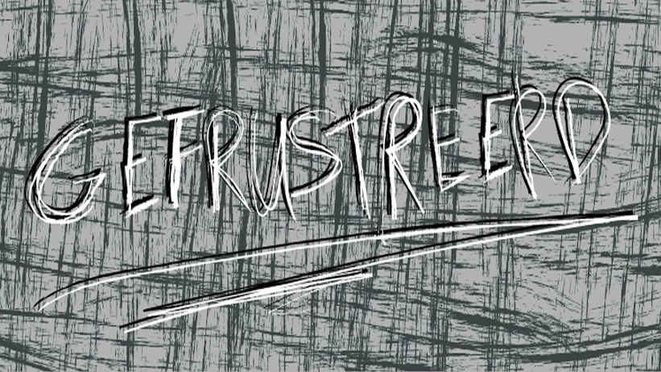
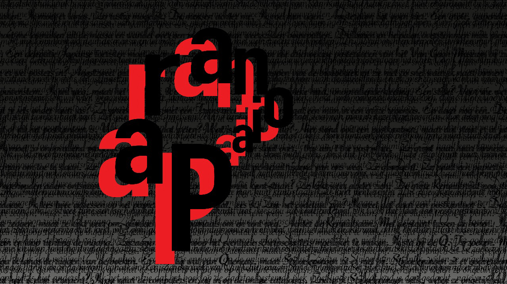
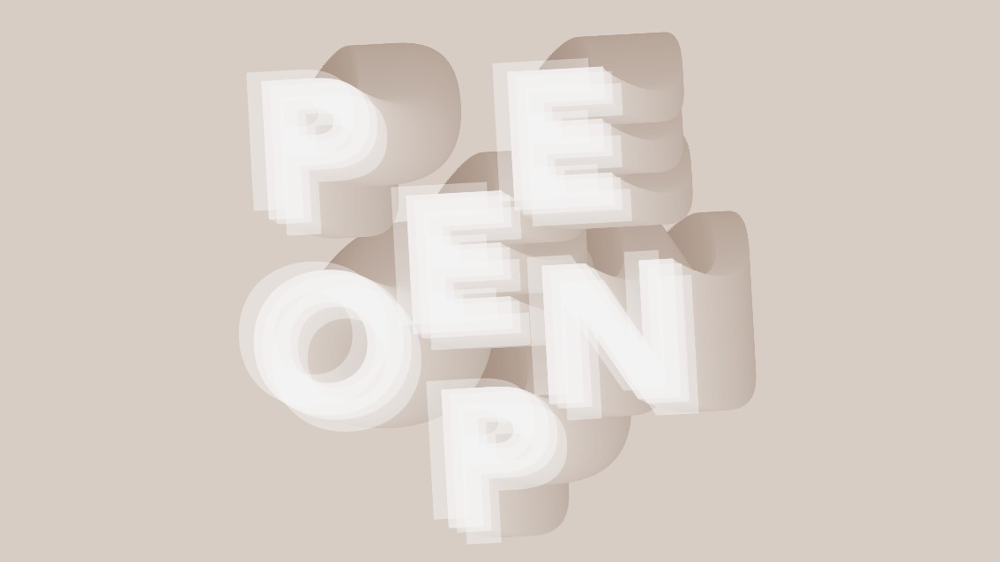

Alzheimer

Ik stap uit, euh... Hoe heet het? Zo’n vervoersdinges op wielen. Van de gemeente. Wit met blauw. Kom. Lijn 12. Of was het 21? Ik weet het niet. Ik stap uit en loop achter een wagentje aan. Van wie is dat wagentje? Ik weet het niet. Ik kijk in het wagentje. Er ligt een ventje in.
Lees meer

Gefrustreerd
Ik stap uit die godverdomde stinkbus. De mensen krioelen als mieren over het stationsplein. Ik wil ze vertrappen onder m’n schoenen. Vermorzelen. Verbrijzelen. De klootzakken en kakkerlakken. Met hun nietszeggende leventjes en hun waardeloze gedachten.
Lees meer

Paranoia
Ik sluip de bus uit. Kop in de kraag. Ik maak me klein en duw m’n zoon vooruit. Hij slaapt. Eindelijk. Zijn gejengel trok veel te veel aandacht. De mensen lopen over het stationsplein. Het voelt alsof er een grote, knipperende pijl boven m’n hoofd hangt: HIER LOOPT HIJ!
Lees meer

Poepen
Het welhaast slaapwekkende geschud van de bus heeft er voor gezorgd dat ik, tegen de tijd dat ik moet uitstappen (ter hoogte van Centraal Station Amsterdam) ontzettend nodig moet poepen. Ik ren achter de kinderwagen aan richting de Openbare Bibliotheek...
Lees meer

Presentator die ten onrechte denkt aansluiting te hebben gevonden bij ‘de kids’
Yo kids! Vet cool dat je weer kijkt! Hoor mijn verhaal: Ik stapte laatst de bus uit op het stadionplein. Je weet togh? Ik duwde mijn zoon die in zijn superlauwe, gifgroene kinderwagen...
Lees meer
Twitter
@molovich
Schoenen gekocht voor Junior. Op twintig meter afstand van m’n huis. #tochnoggeslaagd #kosteenpaaruurtjesmaardanhebjeookwa
2 minutes ago
@molovich In bus terug naar huis. Balen.
Lees meer